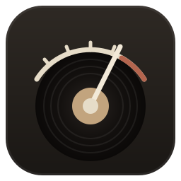

一鍵房間校正
自動切換聲道、對數掃頻，算出每顆喇叭的抵達時間、極性與駐波；只削峰不補凹陷，修到施羅德頻率為止。支援 1／3／5 點平均。

Fono Console聲場控制台開源 · Windows · MIT 授權
Fono Console 是建立在 Equalizer APO 上的音響控制台。量一次房間就自動修掉駐波、對齊前後喇叭，再用 FIR 把喇叭的相位扭轉拉直；耳機有 AutoEq 與交叉饋送；Spotify 與 YouTube Music 的歌單直接在唱片架上翻。
自動切換聲道、對數掃頻，算出每顆喇叭的抵達時間、極性與駐波；只削峰不補凹陷，修到施羅德頻率為止。支援 1／3／5 點平均。
用量測或分頻器模型算出喇叭的超額相位，產生線性相位全通 FIR：低頻不再比高音單體晚到，鼓的起音更乾脆。各取樣率延遲一致。
量 15 個點，解出四顆喇叭各自的濾波器，讓後方喇叭吸掉低頻駐波的殘響。小房間模擬：40–63 Hz 殘響縮短約 25–45%，並附誠實的預估表（含室溫變化）。看示範
前後兩對喇叭的立體聲、四聲道 A（延遲氛圍）、四聲道 B（低頻補強）、Hafler 差訊號環繞，一顆旋鈕切換，Windows 預設裝置自動跟著換。
每支耳機一組設定：AutoEq 資料庫一鍵套用、低音高音、交叉饋送。藍牙耳機顯示電量，可停用會讓音質變差的免持模式。
Spotify 與 YouTube Music 一起搜尋，專輯與歌單是唱片封套，點開唱片滑出、曲目展開；換來源時自動暫停另一邊。
四種面板、十種配色加自訂五色、皮革／木紋／碳纖維等材質，再鋪上內建的像素與版畫桌布或自己的圖片。看示範
十種黑膠顏色、四種唱盤與防塵蓋，或換成卡帶機；指針、LED、輝光管三種儀表，動畫跟著音樂走。
「編輯版面」拖曳面板、排序導覽列，新增自己的分頁，放進時鐘、迷你唱盤、SPL 計算、測試音、便條等小工具。
只有耳機、2.0、4.0 三選一：沒用到的頁面、按鍵與量測聲道自動收起來，設定檔也只處理你有的喇叭。
目標曲線編輯器、衰減與瀑布圖、麥克風配對與校正檔、等響度補償、房間掃描與早期反射、座位的房間模態；量不到訊號時會先擋下來。
FonoConsole-版本.zip，解壓縮到任何資料夾。FonoConsole.exe。第一次開啟會出現設定精靈：先問你想做什麼（只開需要的功能），再一步一步安裝 Equalizer APO、選裝置與喇叭配置、連接 Spotify／YouTube Music，最後挑外觀。不想用圖形介面？壓縮檔裡的 scripts\setup.cmd 是同樣步驟的命令列版本，可以 -Step 3,9 只做其中幾步。
選一個，上面的示範會自己操作給你看；每一步也都可以單獨點來看。
到「設定」看 Equalizer APO 狀態。裝置旁沒有「EQ APO ✓」就開 Device Selector 勾選它並重新開機。改設定沒反應通常是權限：按「授予寫入權限」。
Windows 聲音設定 → 錄音 → 麥克風內容 → 等級調到 70–90，關掉「麥克風增強」與所有音效。量測時關冷氣、風扇。
多聲道音效卡在 Windows 要設成 7.1 環繞；多數 USB 7.1 卡的「後方」插孔是 SL/SR。不同的話在「設定 → 聲道對應」改。
會，所有聲道一起延遲約 85 ms。聽音樂沒影響；看影片口型可能略不同步，打遊戲建議在 FIR 頁關掉。
那是藍牙免持模式：開麥克風時降成單聲道。若不用耳機麥克風，在「耳機」頁停用該耳機的免持即可。
把 Equalizer APO 的 config\config.backup-*.txt 改名回 config.txt，再從 Windows「應用程式」移除 Fono Console。
Fono Console 以 MIT 授權發佈。它依賴下列專案；能隨附的已隨附並標明來源，不允許轉發的只提供官方連結。
| 專案 | 用途 | 授權 | 安裝包內 |
|---|---|---|---|
| Equalizer APO | 系統等化器（必要） | GPLv2 | 隨附官方安裝程式（未修改），原始碼見官方網站 |
| YouTube Music 桌面版（pear-desktop） | YouTube Music 曲庫與播放 | MIT | 精靈從 GitHub 下載最新版並比對 SHA-256 |
| AutoEq | 耳機頻響校正資料 | MIT | 使用時線上讀取，本機快取 |
| REW（Room EQ Wizard） | 選用的進階量測 | 免費、不可轉發 | 不隨附，請從官方網站下載 |
| Spotify Web API | 曲庫搜尋與播放 | Spotify 開發者條款 | 需使用者自己建立開發者 App |
Spotify 與 YouTube 是其所有者的商標，本專案與它們無關。